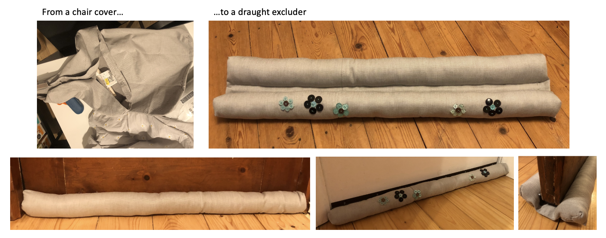
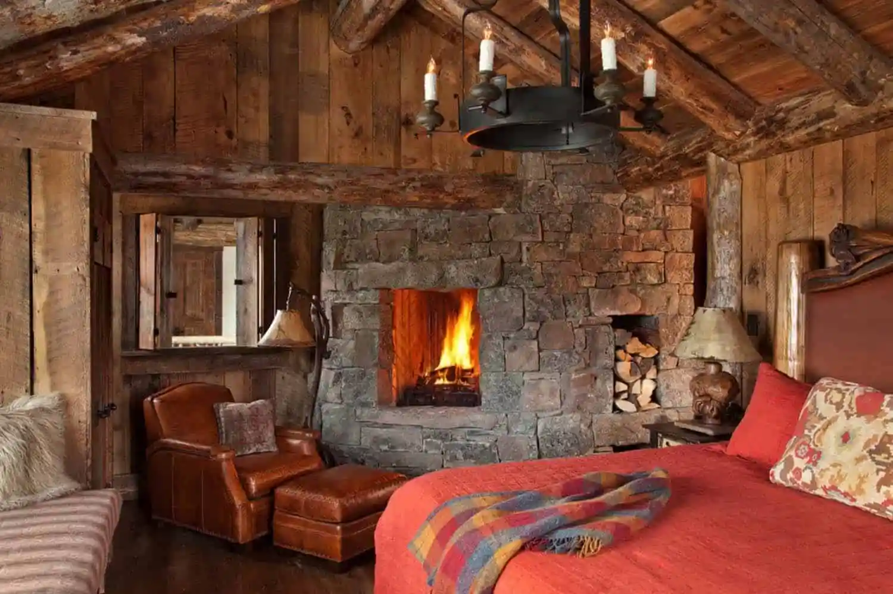
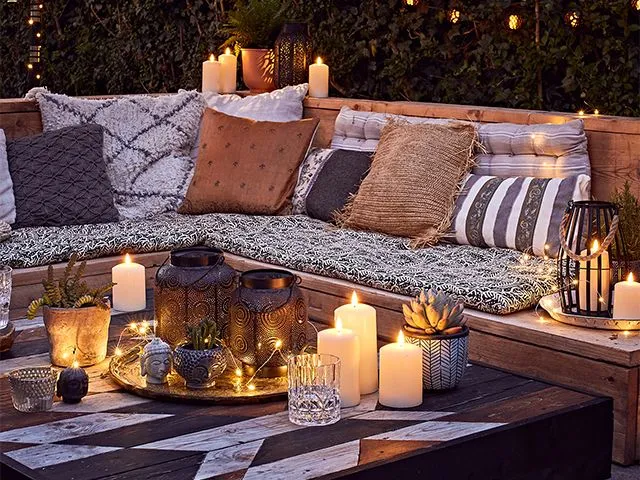
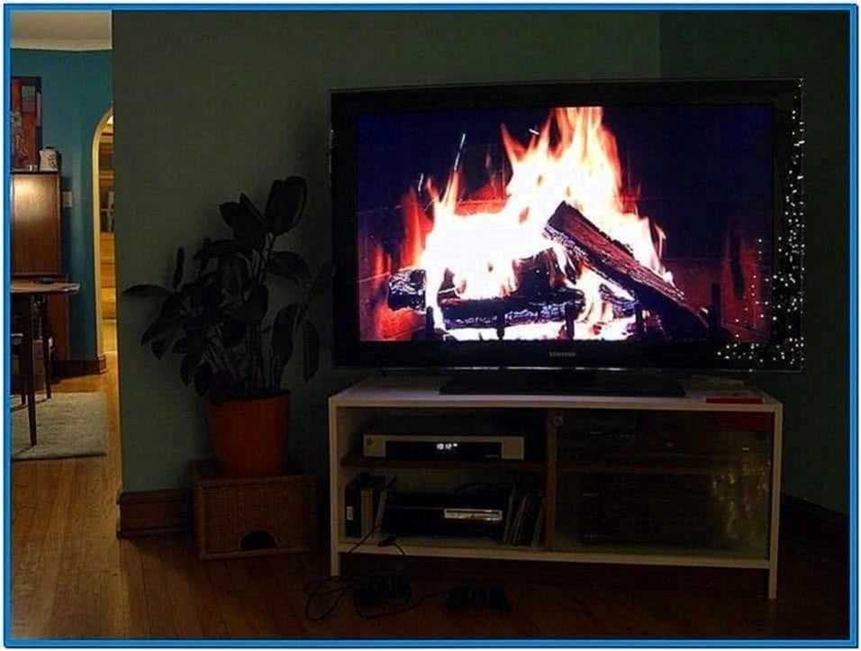
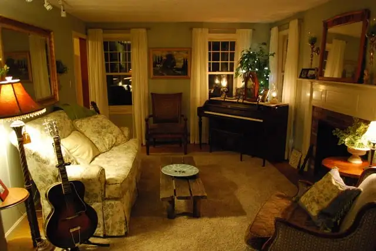

Forget Hygge, Lagom does Cosy Homes too!
The first workshop in the Lagom programme concentrated on ‘Cosy Homes’, quite topical now the weather is turning wintry and utility bills are rocketing.
Being cosy isn’t just about turning up the heating thermostat. Part of it is mind over matter, but try to conserve any heat you do have in a room.
- Curtains or blinds can limit heat loss and prevent draughts through windows.
- Rugs can limit draughts through gaps in wooden floors and, even on carpeted surfaces, can feel sumptuous between your toes and make a room feel cosier.
- Add a draught excluder to the door.
Making a draught excluder from surplus or unwanted textiles was the workshop’s practical challenge. The photos of my effort are shown below. It can be as difficult or as basic as you prefer provided it does the job. We're hoping ours will limit the light pollution from the landing into one of the bedrooms and prevent the chill from the ever-open windows in that room being shared throughout the house. 
Interior design experts seem to agree that cosiness is dependent on having an environment that is intimate and enclosed, with plenty of tactile materials, gentle lighting and home decor that is comfortable and evokes happy memories. Texture, colour and lighting are key.
- Have cosy extra layers available like throws to drape over knees or around shoulders.
- Upholstered furniture or extra cushions promote a sense of comfort.
- Experts suggest we should look for tactile textiles: velvet, linen and wool all have a cosy quality. The tassels on a throw can make it seem scarf like, a design that makes you think of warming layers.
- Wall and accessory colours can have an impact on how cosy or welcoming your home can feel. Apparently, warmer tones are creams, taupes, oranges, reds and darker greens. Hmmm… I’ll stick with blues and add a few extra clothing layers or else will be warmed by (distant) memories of Everton's footballing successes! 
- Find a warming focal point for your room, a fireplace, if you have it. You don’t even have to light it. A curated log display and the promise of heat can sometimes be enough.
- Try a cluster of lanterns and candles to get the same sense of natural heat if you don’t have a fireplace. 
- One fellow Lagomer told us she’d played a recording of a log fire on her TV and lit bonfire scented candles. Who knew they were a thing?! Even though the room was no warmer than usual, the family perceived that there was a heat source in the room and felt hot. 
- Fragrance has a big part to play in creating restful and cosy homes. Your rooms don’t need to smell like November 5th. Other scents can provide comfort and a sense of cosiness. There are endless options in terms of candles, room sprays and reed diffusers. The smells of baking or coffee brewing might work too.
- Low level lighting seems to be the key to cosiness. Could you turn off your overhead lights and use lamps? Switch to dimmable bulbs so you can adjust the lighting to your mood or activity? Candle light can create a cosy ambience. 
- Being surrounded by your favourite things will provide comfort too. Books? Photos? Plants? Collectibles? Whatever makes you happy.
I suppose a lot of this is hygge-inspired so a fusion of Scandinavian ideas is probably the way to go. Why not embrace them all.